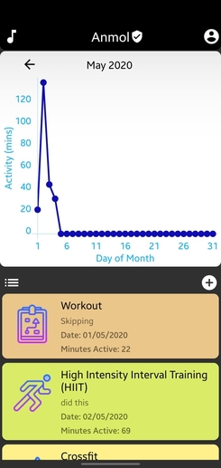
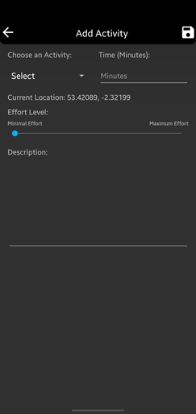

This section explains all of the gestures present on corresponding pages.
Homepage

The gesture implemented on this page is on the chart. If you swipe left or right on it, the previous or next month data will be shown.
Add Activity

There are multiple gestures implemented here. Swiping up saves the activity and swiping right takes you back to the previous page.
Profile
For this page, swiping to the right saves the user's profile and navigates back to the previous page. Swiping left opens up this How-To guide. Swiping down signs you out.